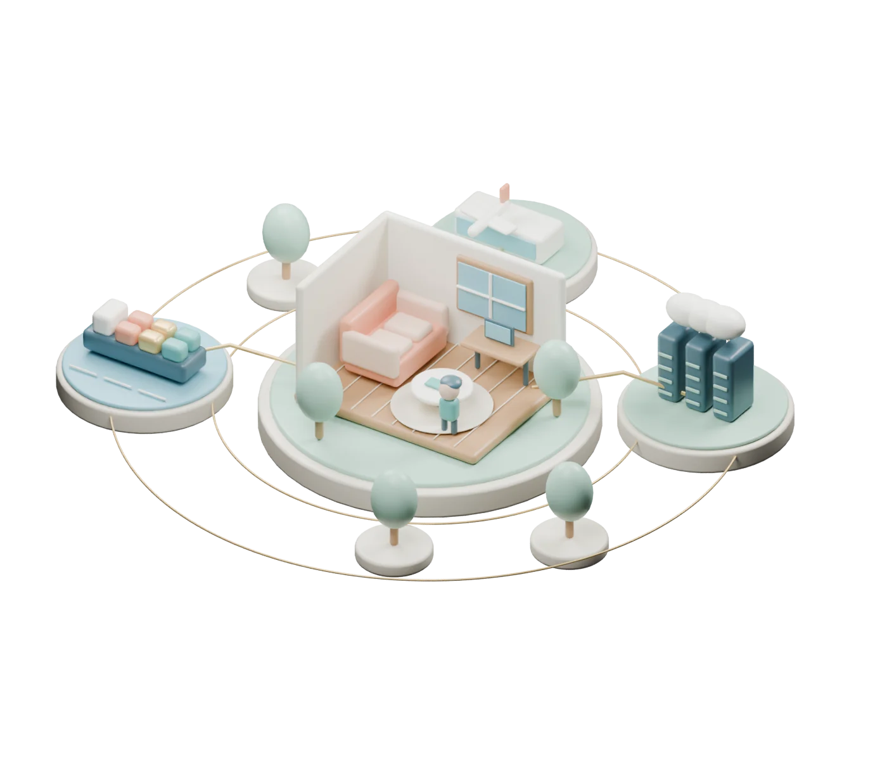

一個世界，許多與你相連的日常
世界很大。
從與你有關的地方看。
一件事，如何走進你的生活？
循著線索，理解影響，也看見未知。
THE WORLD AROUND YOU

我的日常 YOU ARE HERE
Blender 微縮場景 · 靜態省電模式
01 / 世界事件
→從官方來源出發
02 / 傳導途徑
→把事實與推論分開
03 / 我的情境
由你確認是否相關
一件事，如何走進你的生活？
循著線索，理解影響，也看見未知。

從官方來源出發
把事實與推論分開
由你確認是否相關